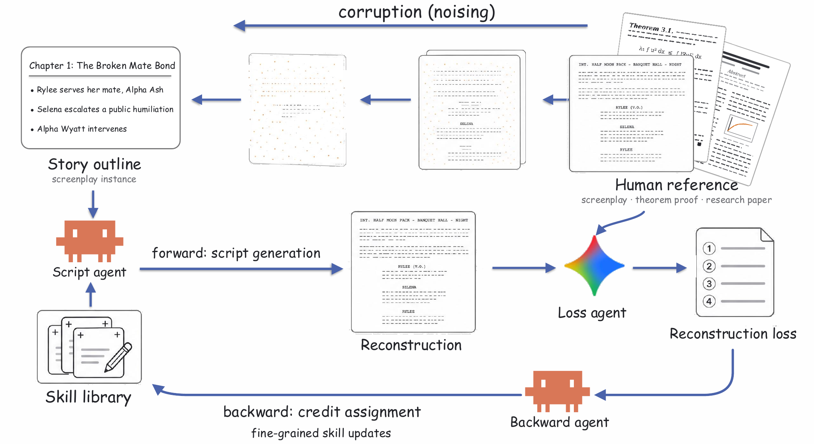
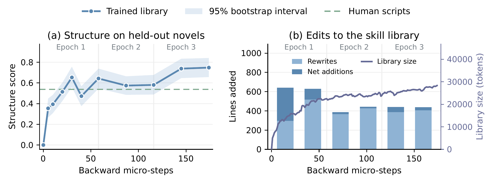
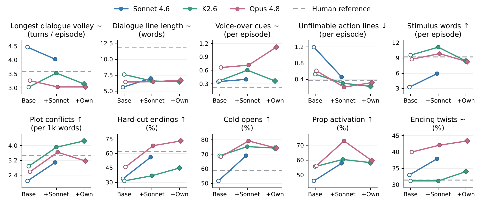

Preprint July 2026
Skill Training with
Corruption and
Reconstruction Loop
Learn the craft.
Keep the model frozen.
Professional work contains more than answers. It contains skills. We turn existing human artifacts into a learning signal that an agent uses to build and refine an external, readable skill library.

Abstract
Large Language Models (LLMs) often struggle in highly specialized domains. Rather than parameter-level adaptation of LLMs which is costly and difficult to interpret, external skills (often defined as text files) have been recently proposed to augment LLMs for specialized domains. However, such skills rely on costly active human annotations or passive summarization of high-quality examples. In this paper, we propose a self-supervised approach for agent self-evolution that learns domain-specific skills directly from existing high-quality human artifacts, without additional human annotations or external rewards. Inspired by diffusion models, our approach follows a forward–loss–backward process to reconstruct human artifacts by iteratively learning the agent’s external skill library rather than updating its model parameters. Experiments on short-drama screenwriting demonstrate that our approach enables agents to autonomously extract generalizable writing skills from human-authored scripts and substantially improve domain-specific generation quality. Our approach provides a scalable paradigm for agents to continuously learn many kinds of complex skills from existing high-quality human artifacts.
How the library learns
The human original supplies the reference. The agent’s own mistakes determine what to learn.
- 1
Corrupt
Compress a professional screenplay into a story outline. Preserve the plot, remove dialogue, actions, and pacing.
- 2
Reconstruct
The script agent reads relevant skill cards and writes a full screenplay from the outline.
- 3
Compare
A loss agent contrasts the reconstruction with the original and describes the specific gaps in writing craft.
- 4
Update
A backward agent routes the feedback into targeted skill edits. The next reconstruction uses the revised library.
Skills are stored as text cards, organized by expertise and retrieved when relevant. Model weights stay fixed throughout training.
From learned skills to better scripts
Trained on 20 professional short-drama novels. Evaluated on 385 episodes from 6 unseen novels, using Claude Sonnet 4.6.
Hard-cut endings
34%67%
Episodes that stop mid-action, before the outcome lands.
Unfilmable action lines
1.20.2
Lines per episode describing what a camera cannot capture.
Human preference
49/ 75
Judgments favor trained skills over an empty library, across 15 episode pairs and 5 readers.
Comparison with prompting and direct distillation
Table 2 in the paper| Metric | Base | +Few-shot | +Distill | +Ours | Human |
|---|---|---|---|---|---|
| Longest dialogue volley turns / episode · ~ | 4.5 | 4.6 | 4.9 | 4.2 | 3.6 |
| Dialogue line length words · ~ | 5.6 | 10.2 | 7.1 | 7.3 | 11.9 |
| Voice-over cues per episode · ~ | 0.35 | 0.37 | 2.56 | 0.52 | 0.22 |
| Unfilmable action lines per episode · ↓ | 1.2 | 1.5 | 1.5 | 0.2 | 0.4 |
| Stimulus words per episode · ↑ | 3.3 | 2.9 | 3.3 | 6.3 | 9.2 |
| Plot-conflict density per 1,000 words · ↑ | 2.10 | 2.00 | 1.81 | 3.69 | 3.47 |
| Hard-cut ending rate ↑ | 34% | 34% | 32% | 67% | 62% |
| Cold-open rate ↑ | 52% | 52% | 52% | 74% | 59% |
| Prop-activation rate ↑ | 46% | 45% | 48% | 58% | 57% |
| Ending-twist rate ~ | 33% | 34% | 32% | 31% | 31% |
Base uses an empty library. +Few-shot provides 24 human-written episodes. +Distill learns rules directly from human scripts. +Ours learns through reconstruction. All six directional metrics improve significantly over Base in the paper’s paired bootstrap analysis. These metrics measure specific writing behaviors, not overall script quality.
What readers preferred
In a blind comparison, the trained version received 49 wins, the base version 17 wins, and 9 judgments were ties. The five readers included three external short-drama practitioners and two paper authors. Each reader assessed the same 15 episode pairs.
Training curves
Across 174 skill-update steps, the structure score rises quickly in the first epoch and levels off near 0.75 in the third. The skill library learns useful rules early, then spends more of its updates refining them.

The structure score averages four standardized measures: plot-conflict density, hard-cut endings, cold opens, and prop activation. An empty library scores zero. Later updates mostly rewrite existing rules rather than add new ones.
Skills can travel between models
A library learned by Sonnet can also guide Kimi K2.6 and Claude Opus 4.8. The training signal comes from a model’s mistakes, while the resulting text skills can be reused by another model.

With Sonnet’s library, Opus scores significantly higher on five of the six directional metrics than with its own library. Hard-cut endings are the exception.
@misc{li2026skilltraining,
title={Skill Training with Corruption and Reconstruction Loop},
author={Li, Mo and Yin, Zixin and Wu, Qihao and Cao, Ting
and Liu, Yunxin and Shum, Heung-Yeung},
year={2026},
eprint={2607.27557},
archivePrefix={arXiv},
primaryClass={cs.CL},
url={https://arxiv.org/abs/2607.27557}
}